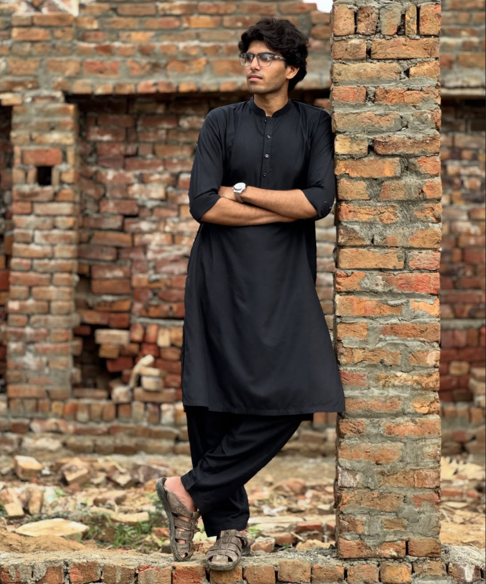

Hi, I’m
Saboor Ulhaq
Frontend & Mobile Developer
I'm a Computer Science student and aspiring software developer passionate about building modern web and mobile applications. I enjoy exploring new technologies, solving problems, and turning ideas into functional digital experiences.
About Me
I'm currently pursuing a BS in Computer Science (Gaming & Animation) at UET Lahore (2025–2029).
My technical skills include HTML, CSS, Bootstrap, JavaScript, React.js, React Native, Redux, REST APIs, and
Supabase.I love learning, experimenting with new technologies, and building projects that improve my development skills.
My goal is to become a skilled software engineer and create meaningful digital products.
I'm currently pursuing a BS in Computer Science (Gaming & Animation) at UET Lahore (2025–2029). My technical skills include HTML, CSS, Bootstrap, JavaScript, React.js, React Native, Redux, REST APIs, and
Supabase.I love learning, experimenting with new technologies, and building projects that improve my development skills. My goal is to become a skilled software engineer and create meaningful digital products.
